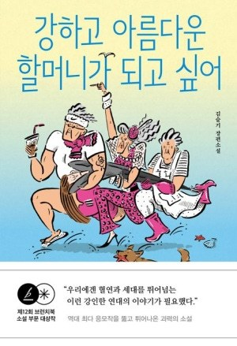
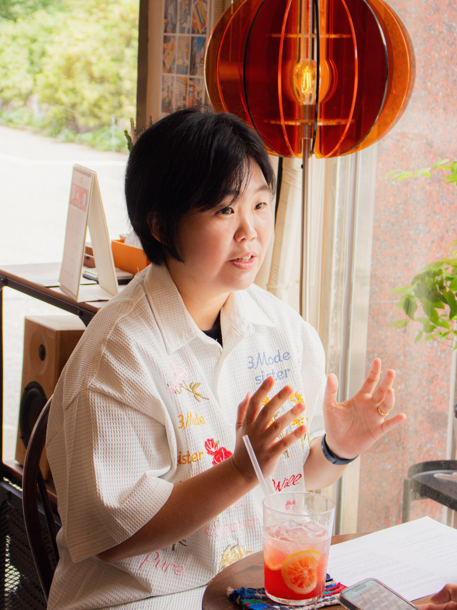
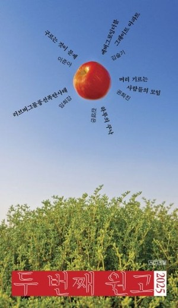
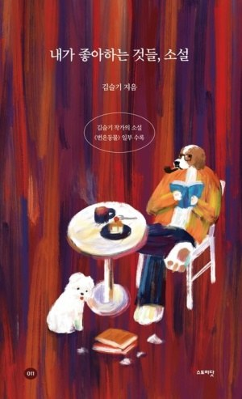
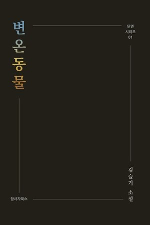
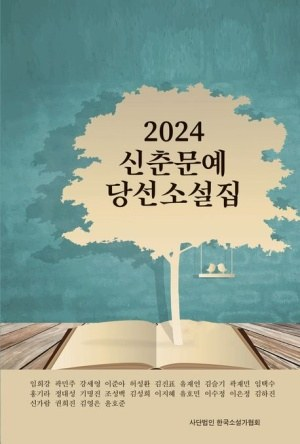
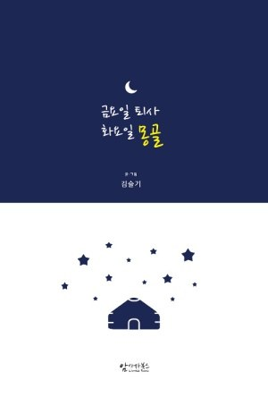
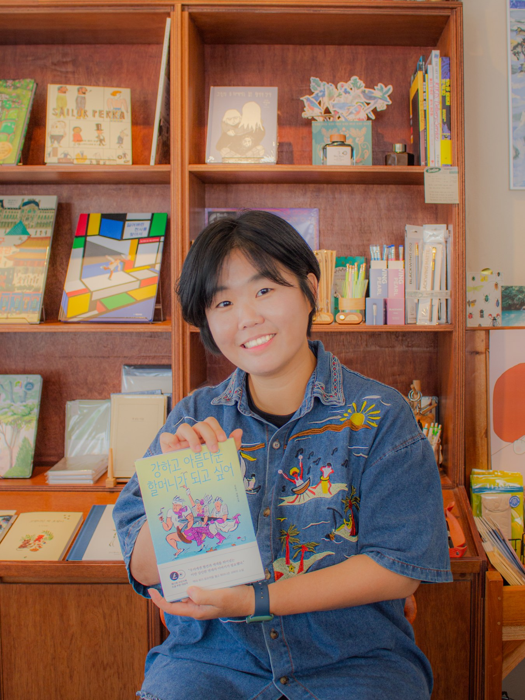
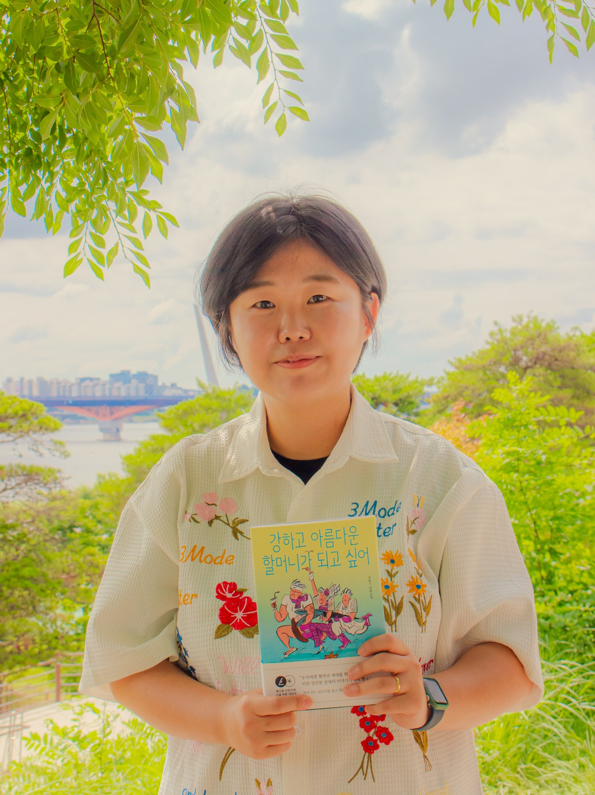

강하고 아름다운 할머니가 되고 싶어
“다 자란 어른이 회복하는 데도 온 마을이 필요하다.”
- 서울국제도서전 ‘한국에서 가장 재미있는 책’ 선정
- 문학나눔 선정
- 러시아 번역판 출간 · 인도네시아 번역판 출간 예정

WRITING
노동, 집, 돈, 쾌활하고 이상한 사람들에 관심이 있습니다.
FEATURED WORK

“다 자란 어른이 회복하는 데도 온 마을이 필요하다.”





발표작과 수록작을 연도별로 정리합니다.
소설 밖에서 쓴 산문과 칼럼을 모아둡니다.
NOW
새로운 장편소설과 단편소설, 칼럼을 씁니다.

ABOUT
농담이 우리를 최악으로부터 빗겨나가게 만든다고 믿습니다.
독립출판으로 에세이와 소설을 쓰기 시작했고, 2024년 국제신문 신춘문예 단편소설 부문으로 등단했습니다. 노동의 현장과 자본주의의 이면, 주거 문제와 그 안에서 살아가는 사람들에게 관심이 있습니다. 순수문학과 대중문학의 경계를 나누기보다 오래 읽히는 재미있는 소설을 쓰고 싶습니다.
아르코 장편소설 창작 지원 선정
서울국제도서전 ‘한국에서 가장 재미있는 책’ 선정
국제신문 ‘아침숲길’ 정기 필진
장편소설 『강하고 아름다운 할머니가 되고 싶어』 출간
제12회 브런치북 출판 프로젝트 소설 부문 대상
국제신문 신춘문예 단편소설 부문 당선

RECENT
CONTACT
강연 · 작가와의 만남 · 인터뷰 · 원고 청탁 · 협업 제안
amsajabooks@naver.com →